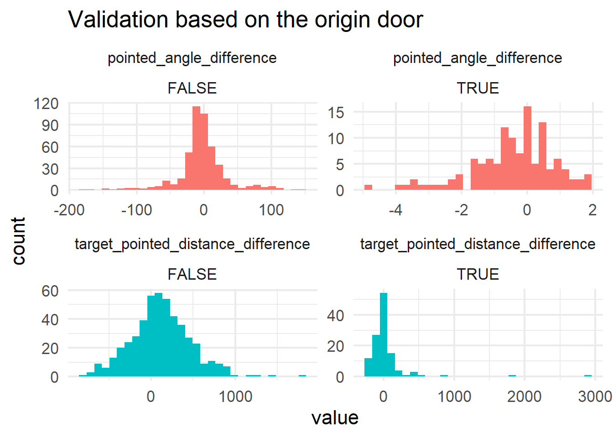
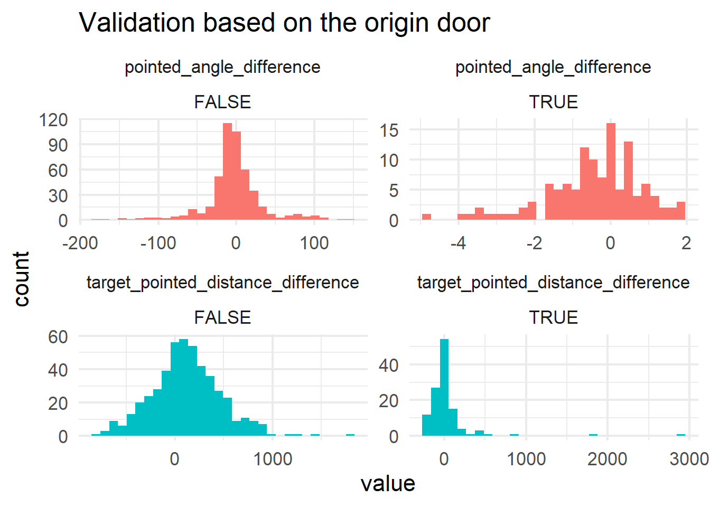
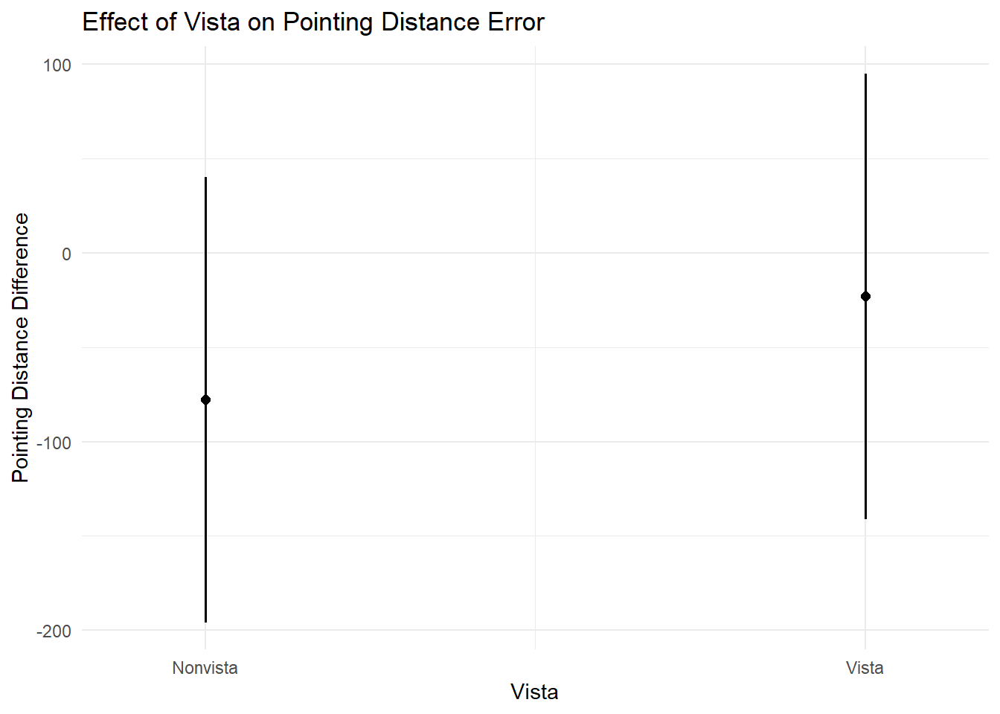
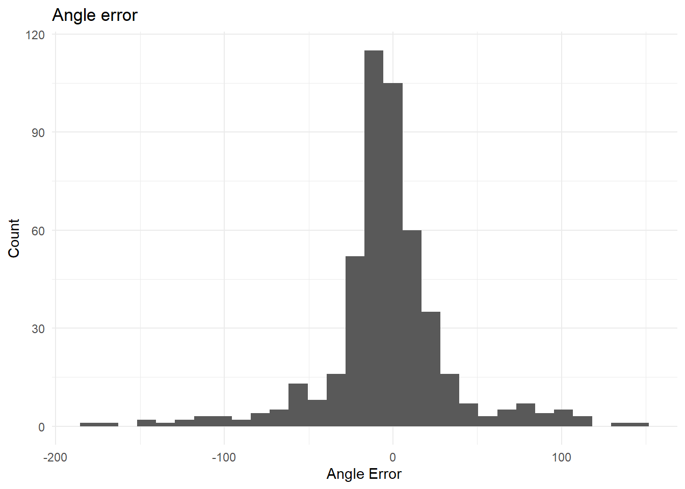
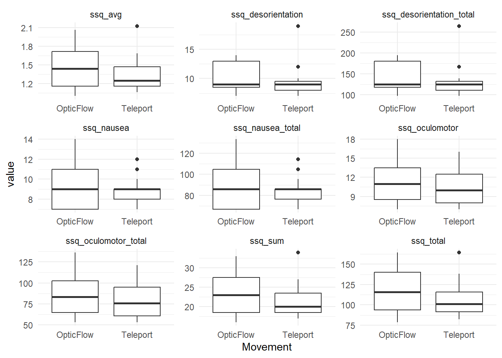

`stat_bin()` using `bins = 30`. Pick better value with `binwidth`.
Validation based on the origin door
`stat_bin()` using `bins = 30`. Pick better value with `binwidth`.
Linear mixed model fit by REML ['lmerMod']
Formula: target_pointed_distance_difference ~ Movement + LevelSize + Vista +
Movement:LevelSize + Movement:Vista + LevelSize:Vista + (1 |
UnrealLevelName) + (1 | participant)
Data: df_pointing_model
REML criterion at convergence: 6770.6
Scaled residuals:
Min 1Q Median 3Q Max
-2.8428 -0.6114 -0.0491 0.5551 5.6283
Random effects:
Groups Name Variance Std.Dev.
participant (Intercept) 30981.5 176.02
UnrealLevelName (Intercept) 654.2 25.58
Residual 83520.6 289.00
Number of obs: 480, groups: participant, 15; UnrealLevelName, 4
Fixed effects:
Estimate Std. Error t value
(Intercept) -77.74 60.09 -1.294
MovementTeleport 154.79 45.71 3.386
LevelSizeSmall 334.48 52.42 6.380
VistaVista 54.70 45.78 1.195
MovementTeleport:LevelSizeSmall -105.73 52.99 -1.995
MovementTeleport:VistaVista -92.14 53.05 -1.737
LevelSizeSmall:VistaVista -104.49 52.76 -1.980
Correlation of Fixed Effects:
(Intr) MvmntT LvlSzS VstVst MT:LSS MvT:VV
MovmntTlprt -0.380
LevelSzSmll -0.436 0.292
VistaVista -0.379 0.332 0.289
MvmntTl:LSS 0.220 -0.577 -0.505 0.003
MvmntTlp:VV 0.218 -0.573 0.002 -0.579 -0.004
LvlSzSml:VV 0.220 0.000 -0.503 -0.576 0.000 0.000We fitted a linear mixed model (estimated using REML and nloptwrap optimizer)
to predict target_pointed_distance_difference with Movement, LevelSize and
Vista (formula: target_pointed_distance_difference ~ Movement + LevelSize +
Vista + Movement:LevelSize + Movement:Vista + LevelSize:Vista). The model
included UnrealLevelName as random effects (formula: list(~1 | UnrealLevelName,
~1 | participant)). The model's total explanatory power is substantial
(conditional R2 = 0.36) and the part related to the fixed effects alone
(marginal R2) is of 0.12. The model's intercept, corresponding to Movement =
OpticFlow, LevelSize = Large and Vista = Nonvista, is at -77.74 (95% CI
[-195.82, 40.34], t(470) = -1.29, p = 0.196). Within this model:
- The effect of Movement [Teleport] is statistically significant and positive
(beta = 154.79, 95% CI [64.96, 244.61], t(470) = 3.39, p < .001; Std. beta =
0.43, 95% CI [0.18, 0.68])
- The effect of LevelSize [Small] is statistically significant and positive
(beta = 334.48, 95% CI [231.47, 437.50], t(470) = 6.38, p < .001; Std. beta =
0.93, 95% CI [0.65, 1.22])
- The effect of Vista [Vista] is statistically non-significant and positive
(beta = 54.70, 95% CI [-35.26, 144.66], t(470) = 1.19, p = 0.233; Std. beta =
0.15, 95% CI [-0.10, 0.40])
- The effect of Movement [Teleport] × LevelSize [Small] is statistically
significant and negative (beta = -105.73, 95% CI [-209.86, -1.60], t(470) =
-2.00, p = 0.047; Std. beta = -0.30, 95% CI [-0.59, -4.47e-03])
- The effect of Movement [Teleport] × Vista [Vista] is statistically
non-significant and negative (beta = -92.14, 95% CI [-196.39, 12.11], t(470) =
-1.74, p = 0.083; Std. beta = -0.26, 95% CI [-0.55, 0.03])
- The effect of LevelSize [Small] × Vista [Vista] is statistically significant
and negative (beta = -104.49, 95% CI [-208.17, -0.80], t(470) = -1.98, p =
0.048; Std. beta = -0.29, 95% CI [-0.58, -2.24e-03])
Standardized parameters were obtained by fitting the model on a standardized
version of the dataset. 95% Confidence Intervals (CIs) and p-values were
computed using a Wald t-distribution approximation.$Movement
# Predicted values of target_pointed_distance_difference
Movement | Predicted | 95% CI
---------------------------------------
OpticFlow | -77.74 | -195.82, 40.34
Teleport | 77.04 | -41.04, 195.12
Adjusted for:
* LevelSize = Large
* Vista = Nonvista
* UnrealLevelName = 0 (population-level)
* participant = 0 (population-level)
$LevelSize
# Predicted values of target_pointed_distance_difference
LevelSize | Predicted | 95% CI
---------------------------------------
Large | -77.74 | -195.82, 40.34
Small | 256.74 | 138.61, 374.87
Adjusted for:
* Movement = OpticFlow
* Vista = Nonvista
* UnrealLevelName = 0 (population-level)
* participant = 0 (population-level)
$Vista
# Predicted values of target_pointed_distance_difference
Vista | Predicted | 95% CI
-------------------------------------
Nonvista | -77.74 | -195.82, 40.34
Vista | -23.04 | -141.27, 95.19
Adjusted for:
* Movement = OpticFlow
* LevelSize = Large
* UnrealLevelName = 0 (population-level)
* participant = 0 (population-level)
attr(,"class")
[1] "ggalleffects" "list"
attr(,"model.name")
[1] "lmer_pointed_distance"
`stat_bin()` using `bins = 30`. Pick better value with `binwidth`.
[1] "X" "FirstPointing_time"
[3] "ConfirmedPointing_time" "FirstPointing_x"
[5] "ConfirmedPointing_x" "FirstPointing_y"
[7] "ConfirmedPointing_y" "FirstPointing_z"
[9] "ConfirmedPointing_z" "target"
[11] "start_time" "id"
[13] "Movement" "LevelName"
[15] "LevelSize" "Vista"
[17] "UnrealLevelName" "session"
[19] "training" "Level"
[21] "object_x" "object_y"
[23] "object_z" "pointingpoint_x"
[25] "pointingpoint_y" "pointingpoint_z"
[27] "pointingpoint_target_distance" "pointingpoint_pointed_distance"
[29] "target_pointed_distance_difference" "pointingpoint_target_angle"
[31] "pointingpoint_pointed_angle" "pointed_angle_difference"
[33] "participant" "abs_angle_error" This model has Level name as a random effect, but its variance is 0. So we remove it.
We fitted a general linear mixed model (Gamma family with a log link)
(estimated using ML and Nelder-Mead optimizer) to predict abs_angle_error with
Movement, LevelSize and Vista (formula: abs_angle_error ~ Movement + LevelSize
+ Vista + Movement:LevelSize + Movement:Vista + LevelSize:Vista). The model
included UnrealLevelName as random effects (formula: list(~1 | UnrealLevelName,
~1 | participant)). The model's total explanatory power is moderate
(conditional R2 = 0.20) and the part related to the fixed effects alone
(marginal R2) is of 0.02. The model's intercept, corresponding to Movement =
OpticFlow, LevelSize = Large and Vista = Nonvista, is at 3.28 (95% CI [2.93,
3.63], t(470) = 18.37, p < .001). Within this model:
- The effect of Movement [Teleport] is statistically non-significant and
negative (beta = -0.15, 95% CI [-0.47, 0.16], t(470) = -0.95, p = 0.342; Std.
beta = -0.15, 95% CI [-0.47, 0.16])
- The effect of LevelSize [Small] is statistically non-significant and negative
(beta = -0.18, 95% CI [-0.59, 0.22], t(470) = -0.90, p = 0.371; Std. beta =
-0.18, 95% CI [-0.59, 0.22])
- The effect of Vista [Vista] is statistically non-significant and negative
(beta = -0.09, 95% CI [-0.41, 0.22], t(470) = -0.58, p = 0.564; Std. beta =
-0.09, 95% CI [-0.41, 0.22])
- The effect of Movement [Teleport] × LevelSize [Small] is statistically
non-significant and positive (beta = 0.12, 95% CI [-0.24, 0.49], t(470) = 0.68,
p = 0.498; Std. beta = 0.12, 95% CI [-0.24, 0.49])
- The effect of Movement [Teleport] × Vista [Vista] is statistically
non-significant and positive (beta = 0.06, 95% CI [-0.31, 0.42], t(470) = 0.31,
p = 0.760; Std. beta = 0.06, 95% CI [-0.31, 0.42])
- The effect of LevelSize [Small] × Vista [Vista] is statistically
non-significant and negative (beta = -0.11, 95% CI [-0.47, 0.25], t(470) =
-0.58, p = 0.560; Std. beta = -0.11, 95% CI [-0.47, 0.25])
Standardized parameters were obtained by fitting the model on a standardized
version of the dataset. 95% Confidence Intervals (CIs) and p-values were
computed using a Wald t-distribution approximation.You are calculating adjusted predictions on the population-level (i.e.
`type = "fixed"`) for a *generalized* linear mixed model.
This may produce biased estimates due to Jensen's inequality. Consider
setting `bias_correction = TRUE` to correct for this bias.
See also the documentation of the `bias_correction` argument.$Movement
# Predicted values of abs_angle_error
Movement | Predicted | 95% CI
------------------------------------
OpticFlow | 26.67 | 18.44, 38.57
Teleport | 22.91 | 15.84, 33.14
Adjusted for:
* LevelSize = Large
* Vista = Nonvista
* UnrealLevelName = 0 (population-level)
* participant = 0 (population-level)
$LevelSize
# Predicted values of abs_angle_error
LevelSize | Predicted | 95% CI
------------------------------------
Large | 26.67 | 18.44, 38.57
Small | 22.17 | 15.33, 32.08
Adjusted for:
* Movement = OpticFlow
* Vista = Nonvista
* UnrealLevelName = 0 (population-level)
* participant = 0 (population-level)
$Vista
# Predicted values of abs_angle_error
Vista | Predicted | 95% CI
-----------------------------------
Nonvista | 26.67 | 18.44, 38.57
Vista | 24.30 | 16.79, 35.17
Adjusted for:
* Movement = OpticFlow
* LevelSize = Large
* UnrealLevelName = 0 (population-level)
* participant = 0 (population-level)
attr(,"class")
[1] "ggalleffects" "list"
attr(,"model.name")
[1] "lmer_pointed_angle" [1] "X" "Movement" "LevelName" "LevelSize"
[5] "Vista" "UnrealLevelName" "distance_items" "distance_return"
[9] "session" "participant"
Call:
lm(formula = distance_items ~ Movement + LevelSize + Vista +
Movement:LevelSize + Movement:Vista + LevelSize:Vista, data = df_distance)
Residuals:
Min 1Q Median 3Q Max
-3873.2 -1108.3 -401.8 699.7 10297.2
Coefficients:
Estimate Std. Error t value Pr(>|t|)
(Intercept) 10614.7 528.4 20.089 < 2e-16 ***
MovementTeleport 199.9 691.8 0.289 0.77318
LevelSizeSmall -5166.6 691.8 -7.468 1.84e-11 ***
VistaVista -2204.4 691.8 -3.186 0.00186 **
MovementTeleport:LevelSizeSmall -466.5 798.9 -0.584 0.56044
MovementTeleport:VistaVista 382.0 798.9 0.478 0.63345
LevelSizeSmall:VistaVista 1213.9 798.9 1.520 0.13140
---
Signif. codes: 0 '***' 0.001 '**' 0.01 '*' 0.05 '.' 0.1 ' ' 1
Residual standard error: 2188 on 113 degrees of freedom
Multiple R-squared: 0.5852, Adjusted R-squared: 0.5632
F-statistic: 26.57 on 6 and 113 DF, p-value: < 2.2e-16We fitted a linear model (estimated using OLS) to predict distance_items with
Movement, LevelSize and Vista (formula: distance_items ~ Movement + LevelSize +
Vista + Movement:LevelSize + Movement:Vista + LevelSize:Vista). The model
explains a statistically significant and substantial proportion of variance (R2
= 0.59, F(6, 113) = 26.57, p < .001, adj. R2 = 0.56). The model's intercept,
corresponding to Movement = OpticFlow, LevelSize = Large and Vista = Nonvista,
is at 10614.68 (95% CI [9567.83, 11661.52], t(113) = 20.09, p < .001). Within
this model:
- The effect of Movement [Teleport] is statistically non-significant and
positive (beta = 199.88, 95% CI [-1170.76, 1570.52], t(113) = 0.29, p = 0.773;
Std. beta = 0.06, 95% CI [-0.35, 0.47])
- The effect of LevelSize [Small] is statistically significant and negative
(beta = -5166.59, 95% CI [-6537.24, -3795.95], t(113) = -7.47, p < .001; Std.
beta = -1.56, 95% CI [-1.97, -1.15])
- The effect of Vista [Vista] is statistically significant and negative (beta =
-2204.42, 95% CI [-3575.06, -833.78], t(113) = -3.19, p = 0.002; Std. beta =
-0.67, 95% CI [-1.08, -0.25])
- The effect of Movement [Teleport] × LevelSize [Small] is statistically
non-significant and negative (beta = -466.46, 95% CI [-2049.14, 1116.22],
t(113) = -0.58, p = 0.560; Std. beta = -0.14, 95% CI [-0.62, 0.34])
- The effect of Movement [Teleport] × Vista [Vista] is statistically
non-significant and positive (beta = 381.99, 95% CI [-1200.69, 1964.67], t(113)
= 0.48, p = 0.633; Std. beta = 0.12, 95% CI [-0.36, 0.59])
- The effect of LevelSize [Small] × Vista [Vista] is statistically
non-significant and positive (beta = 1213.95, 95% CI [-368.73, 2796.63], t(113)
= 1.52, p = 0.131; Std. beta = 0.37, 95% CI [-0.11, 0.84])
Standardized parameters were obtained by fitting the model on a standardized
version of the dataset. 95% Confidence Intervals (CIs) and p-values were
computed using a Wald t-distribution approximation.'data.frame': 30 obs. of 14 variables:
$ X : int 1 2 3 4 5 6 7 8 9 10 ...
$ ID : chr "VT1" "VT2" "VT3" "VT4" ...
$ Movement : chr "OpticFlow" "Teleport" "OpticFlow" "Teleport" ...
$ ssq_sum : int 25 19 20 21 24 24 18 17 19 27 ...
$ ssq_avg : num 1.56 1.19 1.25 1.31 1.5 ...
$ ssq_nausea : int 11 9 7 12 11 9 7 7 7 11 ...
$ ssq_nausea_total : num 104.9 85.9 66.8 114.5 104.9 ...
$ ssq_oculomotor : int 13 9 11 8 10 12 8 8 10 14 ...
$ ssq_oculomotor_total : num 98.5 68.2 83.4 60.6 75.8 ...
$ ssq_desorientation : int 9 7 8 8 11 10 9 7 9 12 ...
$ ssq_desorientation_total: num 125.3 97.4 111.4 111.4 153.1 ...
$ ssq_total : num 123.4 93.5 97.2 104.7 119.7 ...
$ vrleq_sum : int 23 12 21 23 43 26 18 10 17 32 ...
$ vrleq_avg : num 2.3 1.2 2.1 2.3 4.3 2.6 1.8 1 1.7 3.2 ...
`summarise()` has grouped output by 'Movement'. You can override using the
`.groups` argument.# A tibble: 9 × 3
question OpticFlow Teleport
<chr> <glue> <glue>
1 ssq_avg 1.43(0.34) 1.35(0.28)
2 ssq_desorientation 10.2(2.54) 9.33(2.99)
3 ssq_desorientation_total 141.98(35.37) 129.92(41.65)
4 ssq_nausea 9.47(2.42) 8.8(1.42)
5 ssq_nausea_total 90.31(23.05) 83.95(13.59)
6 ssq_oculomotor 11.27(3.37) 10.53(2.83)
7 ssq_oculomotor_total 85.4(25.54) 79.84(21.41)
8 ssq_sum 22.93(5.39) 21.6(4.44)
9 ssq_total 115.69(28.64) 107.21(22.02) [1] "X" "ID"
[3] "Movement" "ssq_sum"
[5] "ssq_avg" "ssq_nausea"
[7] "ssq_nausea_total" "ssq_oculomotor"
[9] "ssq_oculomotor_total" "ssq_desorientation"
[11] "ssq_desorientation_total" "ssq_total"
[13] "vrleq_sum" "vrleq_avg" We fitted a linear mixed model (estimated using REML and nloptwrap optimizer)
to predict ssq_causes with Movement (formula: ssq_causes ~ Movement). The model
included ID as random effect (formula: ~1 | ID). The model's total explanatory
power is substantial (conditional R2 = 0.49) and the part related to the fixed
effects alone (marginal R2) is of 0.02. The model's intercept, corresponding to
Movement = OpticFlow, is at 1.43 (95% CI [1.27, 1.60], t(26) = 17.99, p <
.001). Within this model:
- The effect of Movement [Teleport] is statistically non-significant and
negative (beta = -0.08, 95% CI [-0.25, 0.08], t(26) = -1.03, p = 0.312; Std.
beta = -0.27, 95% CI [-0.81, 0.27])
Standardized parameters were obtained by fitting the model on a standardized
version of the dataset. 95% Confidence Intervals (CIs) and p-values were
computed using a Wald t-distribution approximation.We fitted a general linear mixed model (Gamma family with a log link)
(estimated using ML and Nelder-Mead optimizer) to predict abs_angle_error with
ssq and Movement (formula: abs_angle_error ~ ssq * Movement). The model
included participant as random effect (formula: ~1 | participant). The model's
total explanatory power is moderate (conditional R2 = 0.19) and the part
related to the fixed effects alone (marginal R2) is of 0.02. The model's
intercept, corresponding to ssq = 0 and Movement = OpticFlow, is at 3.14 (95%
CI [2.90, 3.37], t(474) = 26.52, p < .001). Within this model:
- The effect of ssq is statistically non-significant and positive (beta = 0.02,
95% CI [-0.12, 0.16], t(474) = 0.28, p = 0.782; Std. beta = 0.02, 95% CI
[-0.12, 0.16])
- The effect of Movement [Teleport] is statistically non-significant and
negative (beta = -0.12, 95% CI [-0.31, 0.07], t(474) = -1.25, p = 0.211; Std.
beta = -0.12, 95% CI [-0.31, 0.07])
- The effect of ssq × Movement [Teleport] is statistically non-significant and
negative (beta = -0.24, 95% CI [-0.50, 0.02], t(474) = -1.83, p = 0.068; Std.
beta = -0.24, 95% CI [-0.50, 0.02])
Standardized parameters were obtained by fitting the model on a standardized
version of the dataset. 95% Confidence Intervals (CIs) and p-values were
computed using a Wald t-distribution approximation.$ssq
# Predicted values of abs_angle_error
ssq | Predicted | 95% CI
--------------------------------
-1.10 | 22.53 | 16.57, 30.63
-0.58 | 22.77 | 17.42, 29.75
-0.07 | 23.00 | 17.99, 29.41
0.45 | 23.24 | 18.16, 29.74
0.96 | 23.48 | 17.93, 30.75
1.47 | 23.72 | 17.40, 32.35
1.99 | 23.97 | 16.68, 34.44
2.50 | 24.22 | 15.88, 36.93
Adjusted for:
* Movement = OpticFlow
* participant = 0 (population-level)
$Movement
# Predicted values of abs_angle_error
Movement | Predicted | 95% CI
------------------------------------
OpticFlow | 23.03 | 18.04, 29.41
Teleport | 20.42 | 15.95, 26.13
Adjusted for:
* ssq = -0.00
* participant = 0 (population-level)
attr(,"class")
[1] "ggalleffects" "list"
attr(,"model.name")
[1] "lmer_ssq_angle"There is no effect of ssq on performance in angle error